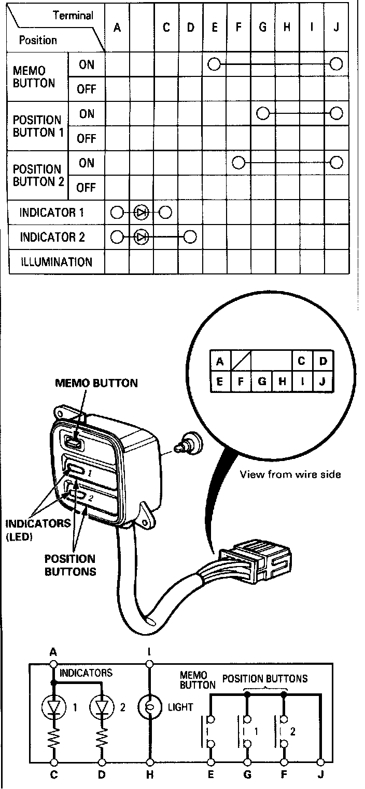

Driving Position Memory Switch Test

Driving Position Memory Switch Test
1. Remove the driver's door panel, then disconnect the 10-P connector from the driving position memory switch.
2. Remove the memory switch.
3. Check for continuity between the terminals in each switch position according to the table.